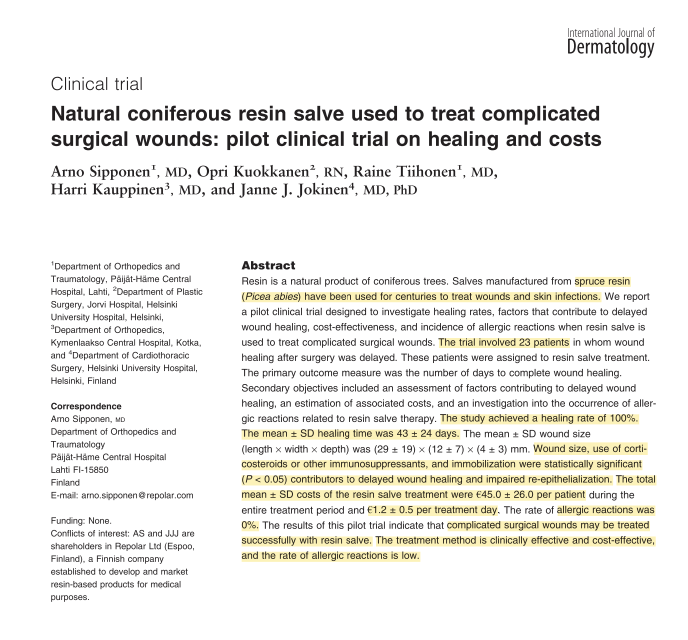

Clinical Study
A pilot clinical trial evaluated Abilar 10% resin salve in 23 patients with chronic, complicated surgical wounds that had failed to heal by primary intent. Patients applied the salve as at-home care, and wound progress was measured by wound care experts every two weeks. The study monitored wound size (length, width, depth), area, and infection status through microbial cultures.
Key Findings
100% of the wounds achieved complete healing within an average treatment period of 43 ± 24 days (range: 10–87 days). A significant observation for clinical practice was that positive bacterial cultures at the start of treatment did not significantly prolong the healing time, which researchers attributed to the salve's ability to disinfect wounds and disperse microbial biofilms.

Download
Download PDFReference
Sipponen A, Kuokkanen O, Tiihonen R, Kauppinen H, Jokinen JJ. Natural coniferous resin salve used to treat complicated surgical wounds: Pilot clinical trial on healing and costs. Int J Dermatol. 2012;51(6):726–32. doi:10.1111/j.1365-4632.2011.05397.x PubMed PMID: 22607295.
Back to study